Nationalmuseum Kopenhagen


D i e R u n e n s t e i n e:
Sønder Kirkeby
Grobkörniger, stark rötlicher Granit - Quaderform
Höhe insgesamt: 79 cm
Größte Breite: 71 cm
Größte Dicke: 31 cm
Runenhöhe: 10,5-12,7 cm
Runeninschrift :
...sur (Sassur o.ä.) setzte diesen Stein nach As... (-gaut oder gunni), seinem Bruder. Und (er) fand den Tod auf Gotland (?). Thor weihe diese Runen!

Vordingborg
Grobkörniger, grauer und rötlicher Granit
Höhe: 144 cm
Breite - A: 46 cm
Breite - B: 60 cm
Runenhöhe: 9,5 -11,5 cm
Runeninschrift :
Thjodver (oder: Thjodvi) machte (das Denkmal) nach Adils ???

Bregninge
Grobkörniger, grauer Granit
Höhe insgesamt: 163 cm
Größte Breite: 175 cm
Runenhöhe: 20 - 29,5 cm
Runeninschrift :
Asa machte dieses "Kumbl" zum Andenken an Toki, ihren und Toki Haklangssohns Sohn

Snoldelev
Feinkörniger, geschichteter blauschwarzer Granit
Höhe insgesamt: 124 cm
Größte Breite: 74 cm
Größte Dicke: 50 cm
Runenhöhe: 4,7 - 12,2 cm
Runeninschrift :
Der Stein Gunwalds, des Sohnes Roalds, "Thul" in Salhøgar (jetzt: Salløv)

Egå
Grobkörniger Granit
Höhe insgesamt: 108 cm
Größte Breite: 80 cm
Größte Dicke: 35 cm
Runenhöhe: 7,2/12,5/20 cm
Runeninschrift :
Alfkil und seine Söhne errichteten diesen Stein zum Andenken an Manni, ihren Verwandten, welcher Gutsverwalter bei Kætil dem Norweger war.

Tirsted
Grobkörniger, leicht rötlicher Granit
Höhe insgesamt: 254 cm
Größte Breite: 140 cm
Größte Dicke: 190 cm
Runenhöhe: zw. 7,5 - 25 cm
Runeninschrift :
Asrath und Hildung (od. Hildwik) errichteten diesen Stein zum Andenken an Fræthi, ihren Verwandten (?)...; aber er war damals (?)...; und er fand den Tod in Schweden und war..., darauf (?) alle Wikinger

Sandby 3
Feinkörniger, blauschwarzer Granit
Höhe insgesamt: 144 cm
Größte Breite: 79 cm
Größte Dicke: 32 cm
Runenhöhe: 5 - 12 cm
Runeninschrift :
Sylfa errichtete ... Spalkløsa (jetzt: Spragelse) zum Andenken an Susur, (seinen) Vater (und machte) diese Brücke (zum Andenken an) Thorgisl, seinen Bruder. Ewig wird ... diese Gedenkschrift, die Sylfa (?) ausführte

Tryggevælde
Grobkörniger, hellgrauer Granit mit eingesprengtem roten Korn
Höhe insgesamt: 325 cm
Größte Breite: 124 cm
Dicke: 30 - 45 cm
Runenhöhe: 13 - 25 cm
Runeninschrift :
Ragnhild, die Schwester Ulfs, setzte diesen Stein und machte diesen Hügel zum Andenken an - und diese Schiffssetzung - Gunulf, ihren Gatten, einen "bellenden" Mann, Sohn des Nærfi. Wenige werden jetzt geboren (,die) besser (sind) als er. Der werde ein "Ræti", der diesen Stein ... oder ihn von hier fortschleppt

Tårnborg
Grobkörniger, rötlicher Granit
Höhe insgesamt: 99 cm
Größte Breite: 60 cm
Größte Dicke: 36 cm
Runenhöhe: 11 - 12,5 cm
Runeninschrift :
Gott ... nehme sich der Seele ... an; er machte (Steine) Ethwin (oder: Gethwin)

Glenstrup 1
Feinkörniger, blauschwarzer, geschichteter Granit
Höhe insgesamt: 150 cm
Größte Breite: 93 cm
Größte Dicke: 27 cm
Runenhöhe: 14 - 17 cm
Runeninschrift :
Thori errichtete diesen Stein zum Andenken an Gunnar, seinen Vater

Asferg
Schwarzer Glimmergranit
Höhe insgesamt: 150 cm
Größte Breite: 75 cm
Größte Dicke: 50 cm
Runenhöhe: 10 - 11,7 cm
Runeninschrift :
Thorgir, Tokis Sohn, errichtete diesen Stein für seinen Bruder Muli, einen sehr wohlgeborenen "Thegn"

Nationalmuseum Kopenhagen
Das dänische Nationalmuseum liegt im Herzen Kopenhagens, unweit zahlreicher Sehenswürdigkeiten wie z.B. Schloss Christiansborg, Rathausplatz, Die Königliche Bibliothek, Thorvaldsen Museum, Ny Carlsberg Glyptotek, Tivoli, Børsen, Einkaufsstrasse Strøget usw.
Oktober -
Mai: Dienstag - Sonntag 10.00 17.00 Uhr - Montag geschlossen
Juni - September: Täglich 10.00-18.00 Uhr
Der Eintritt kostet 120 DKK (ca. 16 ) / unter 18 Jahren gratis.
Nationalmuseet (Eingang: Ny Vestergade 10)
DK-Copenhagen K, Frederiksholms Kanal 12
Tel.: + 45 3313 4411
Am 24.09.2022 war ich im Nationalmuseum Kopenhagen erstmals in der neuen Wikinger Ausstellung "Togtet" die dort bereits ab dem 26.06.2021 für die Dauer von drei Jahren zu sehen ist. Durch die gesamte Ausstellungshalle erstreckt sich das größte bislang gefundene Wikingerschiff, die "Roskilde 6" - 37 Meter lang, gehoben 1997, gebaut vermutlich um 1025. Etwa 20 Prozent des Rumpfes aus Eichenholz sind noch erhalten. Nach ihrer Entdeckung war ein Stahlgestell erarbeitet worden, das es erlaubt, es zügig auf- und abzubauen, um es bei verschiedenen Anlässen - so z.B. bei der letzten großen internationalen Wikingerausstellung in Kopenhagen (22.06. - 17.11.2013) London (06.03. - 22.06.2014) und Berlin (10.09.2014 - 04.01.2015) präsentieren zu können.
Bei meinem Aufenthalt im Kopenhagener Nationalmuseum am 07. August 2015 konnte ich feststellen, dass die Runensteine in der Runensteinhalle inzwischen neu arrangiert wurden. Meine Fotos von diesem Besuch habe ich unter die Texte auf dieser Seite gesetzt.
D i e R u n e n s t e i n e
Über diesen Link kann man sich im Internet über "Sketchfab" ein wirklich tolles 3D Modell von einigen dieser Runensteine anschauen
Sønder Kirkeby (Ergänzungen: 15.03.2021)
Listennummer : DR 220 / DK Syd 2
Der Stein fand sich 1802 als Quader in der nordwestlichen Kirchenmauer in Sønder Kirkeby auf der Insel Falster (Er ist damit der einzige Runenstein von Falster). 1809 wurde er nach Kopenhagen gesandt und dort in einer Nische des "Rundetårn" ("Runder Turm" - erbaut 1637-1642, beherbergt seit 1929 eine astronomische Sammlung) aufgestellt. Dort stand er, bis er 1867 ins Nationalmuseum überführt wurde. Der Stein ist an allen vier Seiten zu einem Baustein zurechtgehauen worden.
Dieser Runenstein mit der heidnischen Formel "Thor weihe (diese) Runen" hat ein christliches Gegenstück in dem Stein Fuglie1/Schonen (Ønd errichtete diesen Stein nach Ødi, seinem Bruder. Er fand den Tod auf Gotland. Gott helfe seiner Seele!"). Der Name des Runenritzer bestand sicher aus 5 Runenzeichen, wobei der Name "Sassur" am wahrscheinlichsten erscheint.
Der Stein trägt auch die Darstellung eines Wikingerschiffes, was darauf schließen lässt, dass Asgaut (?) auf einer seiner Wikingfahrten um sein Leben gekommen ist. Möglicherweise bezeugt die Inschrift die Teilnahme am Gotlandhandel der ausgehenden Wikingerzeit. Über die dänische Runendatenbank findet sich ein zeichnerischer Rekonstruktionsversuch zur Inschrift / Schiffsdarstellung.
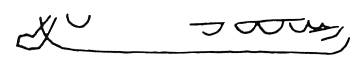
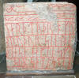 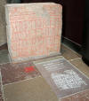 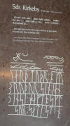


Dieses u.a. Foto - der digitalen Sammlung des Nationalmuseums Kopenhagen entnommen - wurde von Roberto Fortuna am 09.11.2014 im Museum aufgenommen - Lizenz: CC BY-SA
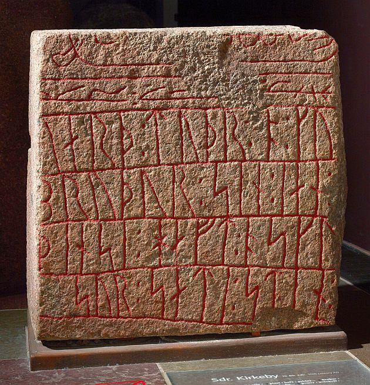
Aufnahme von Sophus Bengtsson aus den 1930er Jahren - Lizenz: CC BY-SA - Der digitalen Sammlung des Nationalmuseums Kopenhagen entnommen.
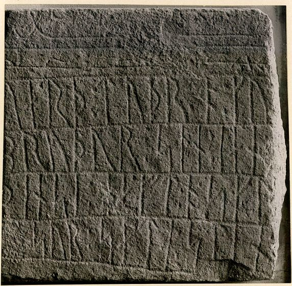
Die Infos aus der dänischen Runendatenbank zu dem Runenstein können hier abgerufen werden.
Vordingborg (Ergänzungen: 15.03.2021)
Listennummer : DR 221 / DK Sj 80
Dieser Runenstein, birgt eine der schwierigsten Inschriften. Die Runen sind außerordentlich vage geritzt, was beim þ im Wort aþisl deutlich wird, da dieses mehr einem großen lateinischen P ähnelt. Der Stein wurde in Vordingborg/Seeland zu Beginn des 17. Jahrhunderts zufällig von Kanzler Christian Friis aus Kragerup entdeckt. Er lag wohl zu der Zeit außerhalb des Schlosses von Vordingborg vor der Schreibstube. Er kam aufgrund eines königlichen Dekrets 1652 nach Kopenhagen und überstand dort den großen Brand im Jahre 1728. Für einige Zeit stand er im "Rundetårn" ("Runder Turm" - erbaut 1637-1642, beherbergt seit 1929 eine astronomische Sammlung). Im Jahre 1867 wurde er ins Nationalmuseum überführt. Bei diesem Umzug brachen ein paar größere Stücke von der Spitze ab, die später mit Zement wieder angebracht wurden.
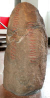 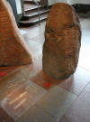 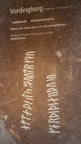


Dieses Foto - der digitalen Sammlung des Nationalmuseums Kopenhagen entnommen - wurde von Roberto Fortuna am 09.11.2014 im Museum aufgenommen - Lizenz: CC BY-SA
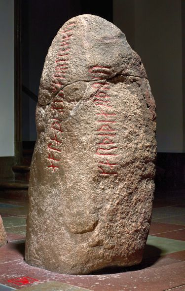
Die Infos aus der dänischen Runendatenbank zu dem Runenstein können hier abgerufen werden.
Bregninge (Ergänzungen 12.02.2021)
Listennummer : DR 219 / DK Syd 12
Kopie des Runensteins bei der Kirche in Bregninge - Deren Navidaten: 54.70522, 11.68804 - Anschrift: Grønnegadevej 45B, 4892 Kettinge, Dänemark
Dieser Runenstein wurde 1627 von Jonas Skonvig (Bergen/N) in Bregninge/Lolland untersucht und gezeichnet, als er sich in der örtlichen Kirchhofeinfriedungsmauer (an der Nordseite der Kirche) befand. Nach Skonvigs Mitteilung soll er früher auf einem Steinhügel in der Nähe der Kirche gestanden haben. Durch Ole Worm (*13.05.1588 - 31.08.1654, Arzt, Universalgelehrter und der Begründer der Runologie), in dessen Auftrag er unterwegs war, wird noch berichtet, dass in dem Hügel eine Eisenzange gefunden wurde. Auch dieser Runenstein wurde aufgrund einer königlichen Verfügung 1652 von Kopenhagen angefordert. Er kam aber nur bis in die südlich gelegene, ca. 8,5 km entfernte Hafenstadt Nysted. Dort blieb er bei der Schiffsbrücke liegen, mit der Inschrift nach oben. Als ihn Søren Abildgaard (*18.02.1718 - 02.07.1791, Zeichner, Kupferstecher und Geologe - antiquarische Reisen 1753-54 und 1756-77) im Jahre 1765 dort fand (gemeinsam mit dem Tirsted Runenstein), war er so verwittert, dass er nicht sofort mit dem durch Ole Worm publizierten Stein gleichgesetzt wurde. Der Stein wurde nämlich über 100 Jahre von Fischern gebraucht, um darauf getrockneten Fisch zu lagern.
Auf Veranlassung der Altertümerkommission wurde er 1815 nach Kopenhagen gebracht. 1817 wurde er zum Trinitatis Kirchhof überführt und kam dann 1867 ins Nationalmuseum.
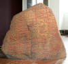 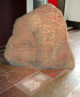 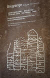


Von dem Bregninge Runenstein haben sich zwei historische Zeichnungen von Jon Skonvig von 1627 und von Søren Abildgaard von 1765 erhalten, die sich heute im Nationalmuseum in Kopenhagen befinden und über deren digitale Sammlung abrufbar sind.
Die Zeichnung von Abildgaard (Vergrößerte Darstellung per Mausklick) - Lizenz: CC BY-SA

Handschriftlicher Text: Denne Rune-Steen fandt ieg nede ved Skibs Broen i Nysted i Lolland, den laa paa skin ene flade Side, den anden flade Side vendte op, hvorpaa Skriften saaes, som dog var meget forslidt, formedelst Skibs Folkene banke deres tørre Fisk paa den. Denne Steen skal tilforn have staaet ved Bregninge Kirke. Den blev aftegnet af S. Abildgaard A(nn)o 1765. Größe im Original: 22 x 32 cm.
Die Zeichnung von Skonvig (Vergrößerte Darstellung per Mausklick) - Lizenz: Public Domain

Inspiriert von einem ähnlichen Projekt in Sagnlandet Lejre war es 2016/17 möglich, Unterstützung und Mittel für die Kopie des Bregninge-Steins zu erhalten, der Anfang Juni 2017 auf Beschluss des Kirchengemeinderats bei der Bregninge Kirche auf der Insel Lolland errichtet wurde.


Fotograf jeweils: Erik Damskier - Lizenz: CC BY-SA 4.0
Über diesen Link findet ihr noch eine längere Abhandlung zur Geschichte des Runensteins in dänischer Sprache inklusive Fotos.
Außerdem findet man in der digitalen Sammlung des Nationalmuseums noch zwei Fotografien von Erik Moltke (*04.04.1901 - 19.10.1984, Runologe, Historiker) aus dem Jahr 1982 und von Roberto Fortuna vom 19.04.2014 - Lizenz jeweils: CC BY-SA


Erik Moltke Roberto Fortuna
Die Infos aus der dänischen Runendatenbank zu dem Runenstein können hier abgerufen werden.
Snoldelev (Ergänzungen: 15.03.2021)
Listennummer : DR 248 / DK Sj 35
Dieser Runenstein, dessen Inschrift auf etwa 700 n. Chr. gedeutet wird, war wohl bereits in der jüngeren Eisenzeit (ca. 0-500 n. Chr.) in Gebrauch, da unter der Runeninschrift ein vierspeichiges Rad erkennbar ist (Durchmesser ca. 30 cm). Ferner weist der Stein drei ineinander verschlungene Hörner und ein Swastika Symbol auf (8,5 x 7 cm). Er gehört damit auch zu den ältesten Runensteinen Dänemarks.
Der Stein wurde Ende der 1770er Jahre unterhalb des "Sylshøj" entdeckt, der zu einer Gruppe von Grabhügel gehörte, die 1500 Schritte von Snoldseje (frühere Ortsbezeichnung von Snoldelev - ca. 35 km südwestlich von Kopenhagen) entfernt lagen, wie in einem alten Bericht von 1812 durch Børge Thorlacius (1775-1829, klassischer Philologe) erwähnt wird. Danach kam er in der Garten des Probst Rachlou, der ihn 1811 der Altertümerkommission schenkte. Daraufhin wurde er im "Rundetårn" ("Runder Turm" - erbaut 1637-1642, beherbergt seit 1929 eine astronomische Sammlung) aufgestellt. Seit 1867 befindet er sich nun im Nationalmuseum in Kopenhagen.
Der Stein wurde mit Sicherheit von jemanden geritzt, der Kenntnis von der karolingischen Schriftart hatte, wie wir sie von Manuskripten bzw. Urkunden Karl des Großen kennen. Hier sieht man oft eine Anfangslinie mit hohen schlanken Buchstaben, gefolgt von einer Linie mit niederen Buchstaben.
Die in der Inschrift erwähnte Örtlichkeit - Salløv - liegt in unmittelbarer Nachbarschaft zu Snoldelev (ca. 1 km Luftlinie).
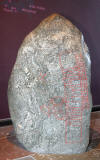 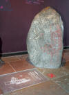 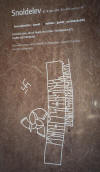


Hier eine zeichnerische Darstellung von 1810 die durch Johann Friedrich Arendt angefertigt wurde - Digitale Sammlung des Nationalmuseums Kopenhagen - Lizenz: Public Domain
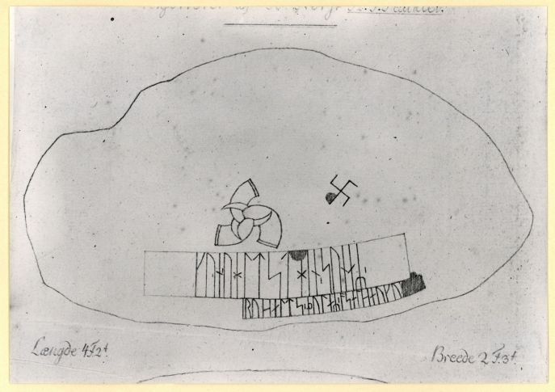
Die Infos aus der dänischen Runendatenbank zu dem Runenstein können hier abgerufen werden.
Eine Kopie dieses Runensteins ist seit dem 21.06.2015 im Areal des Sagnland Lejre zu besichtigen.
Egå (Ergänzungen: 15.03.2021)
Listennummer : DR 107 / DK MJy 67
Auf einer Reise in Jütland fand Prof. Vedel Simonsen (1780-1858, Historiker und Archäologe) diesen Runenstein, dessen Spitze fehlte, in einem Steinzaun in der Ortschaft Egå (nord-östlich von Århus). In den Steinzaun kam er, nachdem er bei einem Hügel ausgegraben wurde, dem Brobjergbakke, der bei der alten Egå Brücke lag. Nach der Entdeckung durch Vedel Simonsen kam er nach Århus, wo er sich befand, bis er 1817 nach Kopenhagen verschifft und dort im "Rundetårn" ("Runder Turm" - erbaut 1637-1642, beherbergt seit 1929 eine astronomische Sammlung) aufgestellt wurde. Bei der Neugestaltung des Steinzauns in Egå im Jahre 1839 fand sich die fehlende Steinspitze wieder. Sie wurde sofort nach Kopenhagen gesandt und passte haargenau zu dem früheren Fund. Bei der Eröffnung der Runenhalle im Jahre 1867 wurde der Stein dann ins Nationalmuseum überführt.
Bei der Gedenkschrift dieses Steines bleiben, wie z.B. in Glavendrup/Fünen, die Söhne unbenannt.
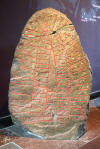 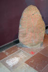 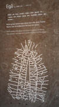


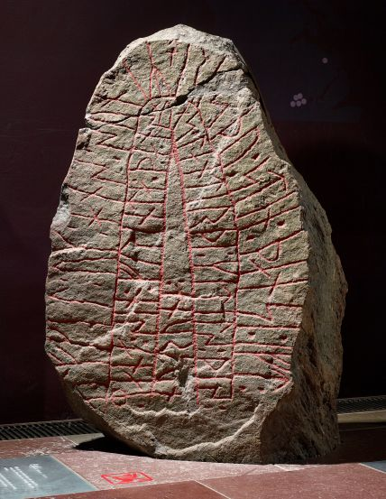
Dieses Foto - der digitalen Sammlung des Nationalmuseums Kopenhagen entnommen - wurde von Roberto Fortuna am 19.11.2014 im Museum aufgenommen - Lizenz: CC BY-SA
Dort finden sich auch noch einige Fotos von Erik Moltke (*04.04.1901 - 19.10.1984, Runologe, Historiker), die dieser in den 1930er Jahren aufgenommen hat, so z.B. dieses Bild - Lizenz: CC BY-SA
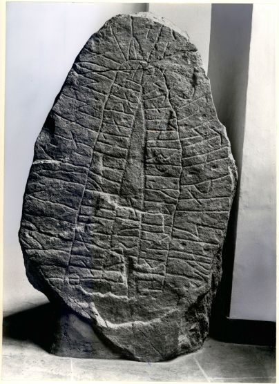
Die Infos aus der dänischen Runendatenbank zu dem Runenstein können hier abgerufen werden.
Tirsted (Ergänzungen: 15.03.2021)
Listennummer : DR 216 / DK Syd 4
Kopie des Runensteins bei der Kirche in Tirsted - Deren Navidaten: 54.73526, 11.34553 - Anschrift: Tirsted Kirkevej 2, 4970 Rødby, Dänemark
Dieser mächtige Stein stand in der südlichen Kirchhofeinfriedung von Tirsted/Lolland, als er 1627 durch Jonas Skonvig (Bergen/N) untersucht und gezeichnet wurde. Er soll von einem Hügel, der östlich der Kirche lag und den Namen "Runensteinhügel" trug, dorthin verbracht worden sein. Noch 1889 wurde eine Brücke (vormals eine Furt), zwischen Geringe und Nebbelunde (ca. 2,5 km südlich des Fundortes) als Runensteinfurt benannt. Dort befand sich vermutlich der ursprüngliche Standort des Runensteins. 1652 wurde der Runenstein nach Kopenhagen geschickt. Er kam allerdings nur bis in die Hafenstadt Nysted/Lolland (ca. 27 km südöstlich von Tirsted). Hier fand Søren Abildgaard (1718-91, Archivzeichner - antiquarische Reisen 1753-54 und 1756-77) ihn im Jahre 1765 (gemeinsam mit dem Bregninge Runenstein) wieder. Er ließ ihn ausgraben und mit Hilfe von 12 Männern (!) wenden. Dort blieb er aber nochmals fast ein halbes Jahrhundert liegen, bis er nach Kopenhagen kam. Am 27. Dezember 1817 wurde er im Kirchhof der Trinitatis Kirche aufgestellt. 1867 wurde er dann ins Nationalmuseum überführt.
Dies ist der zweitgrößte dänische Runenstein. Ähnlich wie beim Runenstein Jelling 2 (Harald Blauzahns Runenstein) werden die Runenbänder oben mit Bandornamentik zusammengehalten. Trotz der guterhaltenen Inschrift ist er nicht zweifelsfrei zu interpretieren.
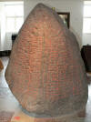 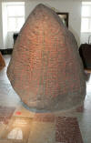 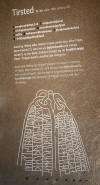


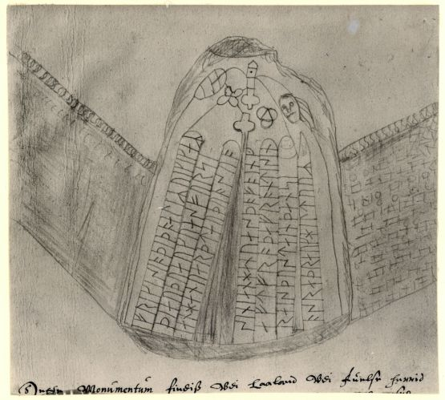
Diese Zeichnung, die Jon Skonvig auf seiner ihm von Ole Worm aufgetragenen Reise durch Dänemark 1627 anfertigte, findet sich heute in der digitalen Sammlung des Nationalmuseums Kopenhagen - Lizenz: Public Domain
Dort findet sich auch diese im Jahr 1765 von Søren Abildgaard erstellte Zeichnung (Original 24x 38 cm) - Lizenz: CC-BY-SA
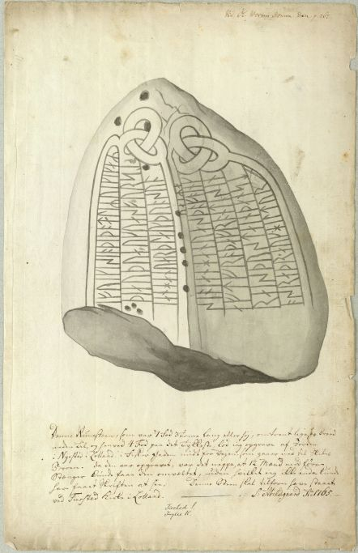
Handschriftlicher Text: Denne Runesteen, som var 7 Fod 3 Tommer lang eller høi, omtrent lige saa breed neden til, og henved 4 Fod paa det tykkeste, lod ieg opgrave af Jorden i Nyested i Lolland, i Fiskergaden midt for Vejen, som gaar ned til Skibs Broen. Da den var opgravet, var det neppe, at 12 Mand med føre Stænger kunde faa dem omvæltet, uden hvilket ieg ikke enda kunde have faaet Skriften at see. Denne Steen skal have tilforn have staaet ved Tiirsted Kirke i Lolland - S: Abilgaard. A8nn)o 1765.
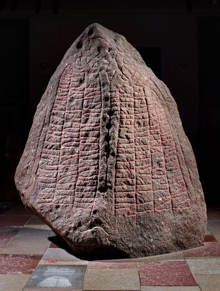
Dieses Foto - der digitalen Sammlung des Nationalmuseums Kopenhagen entnommen - wurde von Roberto Fortuna am 08.02.2016 im Museum aufgenommen - Lizenz: CC-BY-SA
Über diesen Link kann man sich auf der Webseite von "Sketchfab" ein tolles 3D Modell dieses Runensteins von Tirsted anschauen (siehe auch Sketchfab Link unter Überschrift ganz oben).
Die Infos aus der dänischen Runendatenbank zu dem Runenstein können hier abgerufen werden.
Sandby3 (Ergänzungen: 15.03.2021)
Listennummer : DR 229 / DK Sj 93
Über diesen Runenstein wurde erstmals in Ole Worms (1588-1654, Arzt und Alterumsforscher) Werk (Danicorum Monumentorum libri sex, 1643) berichtet. Es handelt sich um ein Bruchstück, die Spitze fehlt. Ole Worm untersuchte ihn selbst, als er in der Chormauer der Sandby Kirche/Seeland saß. Deshalb erkannte er nur die Inschrift der Seite A. 1828 wurde der Stein herausgenommen und nach Kopenhagen gebracht, und beim Aufgang des "Rundetårn" ("Runder Turm" - erbaut 1637-1642, beherbergt seit 1929 eine astronomische Sammlung) aufgestellt. Seit 1867 befindet er sich nun im Nationalmuseum. Es handelt sich um einen frühmittelalterlichen Runenstein.
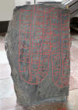 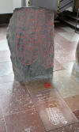 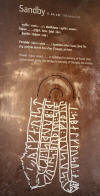 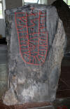 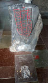 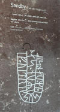


In
der
digitalen Sammlung
des Nationalmuseums Kopenhagen findet sich auch
diese im Jahr 1757 von Søren Abildgaard erstellte Zeichnung (Original 19 x 25
cm) - Lizenz:
Public Domain
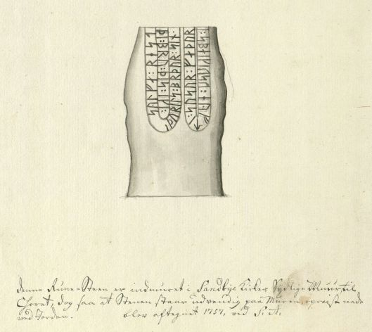
Handschriftlicher Text: Denne Rune-Steen er indmuret i Sandbye Kirkes Sydlige Muur til Choret, dog saa at Stenen staar udvendig paa Muren, opreist nede ved Jorden. Blev aftegnet 1757 ved S: A:
Die Infos aus der dänischen Runendatenbank zu dem Runenstein können hier abgerufen werden.
Listennummer : DR 230 / DK Sj 82
Bei dem Stein von Tryggevælde/Seeland handelt es sich um einen Runenstein, über den schon sehr früh berichtet wird. Bereits 1597 findet sich in Bonaventura Vulcanius (1538-1614, Philologe) Werk "De litteris er lingua Getarum sive Gothorum" ein Deutungsversuch. Nur die Runensteine von Jelling finden in der Literatur noch früher Erwähnung. Aber alle früheren Deutungsversuche sind mehr oder weniger misslungen. Erst 1809 gelang Rasmus Kristian Rask (1787-1832, Sprachforscher) eine brauchbare Interpretation der Inschrift.
Zur Zeit der ersten Erwähnung stand dieser Stein im Burghof von Tryggevælde. Davor stand er offenbar bei dem nahegelegenen Hügel "Keyserhøyen". 1652 wurde er von Christen Schell zum Vallø Schloss (ca. 8 km nördlich gelegen) verbracht und dort bei der Brücke zum Schloss aufgestellt. 1810 wurde der Stein nach Kopenhagen überführt und im Kirchhof der Trinitatis Kirche errichtet. 1867 kam er dann in die neu eingerichtete Runensteinhalle im Nationalmuseum.
Die Inschrift wurde von dem gleichen Runenritzer geritzt, der auch den Runenstein von Glavendrup/Fünen geschaffen hat. Dies kann man anhand der Runenform und der Hautechnik erkennen. Auftraggeber war auch hier wieder Ragnhild, die ihren beiden Männer zur Ehre diese Runensteine errichten ließ. Die beiden Steine tragen auch die gleiche Fluchformel. Die Inschrift ist auf drei Seiten des Steins eingeritzt. Vermutlich ist dieser Stein älter als der von Glavendrup.
Der Runenstein weist fünf Löcher auf, die nach der Runenritzung gebohrt wurden und deren Bedeutung unbekannt ist.
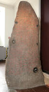 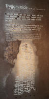 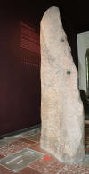 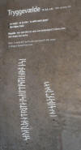


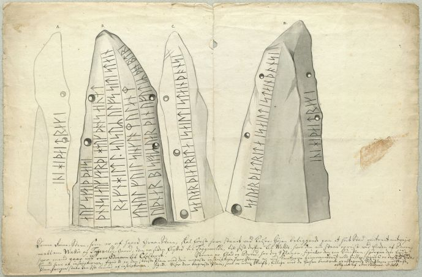
Diese Zeichnung aus dem Jahre 1776 stammt von Søren Abildgaard (Original 38 x 25 cm) - Digitale Sammlung des Nationalmuseums Kopenhagen - Lizenz: CC-BY-SA
Handschriftlicher Text: Denne Rune-Steen, som er af haard Graa-Steen, skal først have staaet ved Keiser-Højen beliggende paa et høit Sted omtrent mitvejs mellem Walløe og Trygewelde-Gaard, den er siden flytted til Trygewelde, til sist derfra til Walløe, hvor den nu staar opreist ved Enden af Broen, hvor mand gaar ind over Graven til Closteret. Stenen er flad og Breed, har dog 4 Planer, figur A er den ene Side-Plan, hvorpaa den første linned sees af inscriptionen, figur B er den største Plan med den meeste inscription, hvor Stenen er ved Kanterne gennemboret med Huller, figur C er den 2de Side-Plan, hvorpaa staar den sidste linned af inscriptionen. Fig:D viser den bagerste Plan, som er uden Skrift, tillige med de forhen benævnte og aftegnede Side-Planer med Skrift, aftegnede af Søren Abildgaard. A(nn)o 1758.
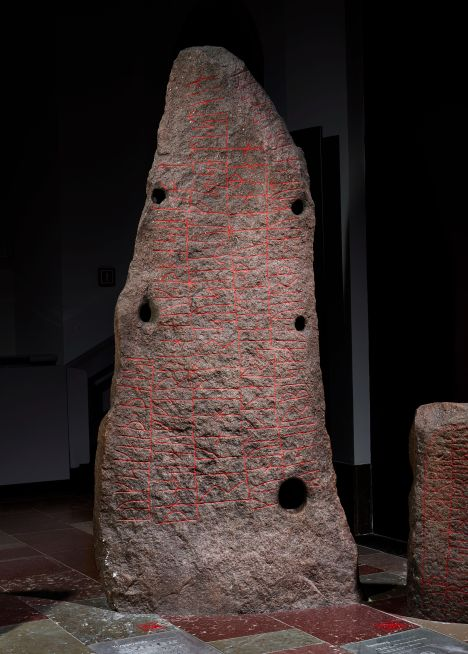
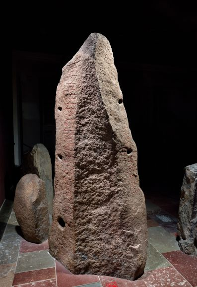
Diese beiden Fotos - der digitalen Sammlung des Nationalmuseums Kopenhagen entnommen - wurden von Roberto Fortuna am 08.02.2016 im Museum aufgenommen - Lizenz: CC-BY-SA
Die Infos aus der dänischen Runendatenbank zu dem Runenstein können hier abgerufen werden.
Listennummer : DR 235 / DK Sj 66
Laut einem Museumsprotokoll wurde dieser Runenstein im September 1874 durch den Gutsverwalter Lorenzen aus Tårnholm gefunden. Dieser meldete den Fund dem Cand. mag. Henry Petersen, der die Fundstelle selbst aufsuchte: "er lag im Uferbereich des Korsør Noor, beim Kleinen Tårnborggaards Feld, ca. 600 Ellen südöstlich der Tårnborg Kirche und ca. 800 Ellen vom Tårnborg Schloss entfernt". Der Stein lag mit der Inschrift nach oben und wurde täglich durch die Wellen des Noors überspült. Dadurch ist der Stein ziemlich abgeschliffen worden, so dass die Inschrift nicht mehr zweifelsfrei zu deuten ist. Die Inschrift auf diesem mittelalterlichen Runenstein beginnt in der linken Linie.
Es ist möglich, dass er an seiner ursprünglichen Stelle gefunden wurde. Der Stein wurde dem Nationalmuseum geschenkt und fand 1876 seinen Platz in der Runensteinhalle in Kopenhagen.


Im Mai 1933 fertigte der dänische Runologe Erik Moltke diese Fotografie - Lizenz: CC-BY-SA - Fundort: Digitale Sammlung des Nationalmuseums
Dieses Foto - der digitalen Sammlung des Nationalmuseums Kopenhagen entnommen - wurde von Roberto Fortuna am 08.02.2016 im Museum aufgenommen - Lizenz: CC-BY-SA
Die Infos aus der dänischen Runendatenbank zu dem Runenstein können hier abgerufen werden.
Listennummer : DR 122 / DK MJy 48
Nach der frühesten bekannten Mitteilung befand sich der Stein 1623 auf dem Kirchhof von Glenstrup/Jütland. Nach dorthin wurde er angeblich umgesetzt und befand sich ursprünglich auf einem Hügel, unmittelbar südlich der Kirche, genannt "Quinnar Hoy". Aufgrund eines königlichen Dekrets kam er 1652 nach Kopenhagen und wurde dort bei der Trinitatis Kirche aufgestellt. Bei einem großen Brand im Jahre 1728 konnte er gerettet werden. Er lag lange auf dem Kirchplatz und später in einer Ecke in der Trinitats Kirche. 1807 wurde er am Eingang zum "Rundetårn" ("Runder Turm" - erbaut 1637-1642, beherbergt seit 1929 eine astronomische Sammlung) aufgestellt.
Dann kam er mit den anderen dort aufgestellten Runensteinen 1867 in die neu errichtete Runenhalle des Nationalmuseums in Kopenhagen.


Diese Zeichnung, die Jon Skonvig auf seiner ihm von Ole Worm aufgetragenen Reise durch Dänemark 1627 anfertigte, findet sich heute in der digitalen Sammlung des Nationalmuseums Kopenhagen - Lizenz: Public Domain
Im Mai 1933 fertigte der dänische Runologe Erik Moltke dieses Foto - Lizenz: CC-BY-SA - Fundort: Digitale Sammlung des Nationalmuseums
Dieses Bild hat der Fotograf Roberto Fortuna am 19.11.2014 im Museum bei besten Verhältnissen aufgenommen - Lizenz: CC-BY-SA - Fundort: Digitale Sammlung des Nationalmuseums
Über diesen Link kann man sich auf der Webseite von "Sketchfab" ein einfaches 3D Modell des Runensteins von Glenstrup 1 anschauen (siehe auch Sketchfab Link unter Überschrift ganz oben).
Die Infos aus der dänischen Runendatenbank zu dem Runenstein können hier abgerufen werden.
Listennummer : DR 121 / DK MJy 47
Dieser Runenstein wurde 1795 in Nordjütland gefunden. Er fiel mit etlichen anderen Steinen bei der Schleifung eines Hügels auf dem Ejstrup Mühlenfeld an. Ein zufällig vorbeikommender Bauer wurde dabei auf die Runeninschrift aufmerksam. Er schrieb sie sich auf und übergab die Abschrift dem Pastor Sadolin. Der Stein wurde dann außerhalb der Flurtür bei der Ejstrup Mühle abgelegt. Erst 13 Jahre nach dem Fund erstattet der Pastor Bericht, worauf der Runenstein von der Altertümerkommission gekauft und 1825 nach Kopenhagen kam. Er wurde ebenfalls zunächst im "Rundetårn" ("Runder Turm" - erbaut 1637-1642, beherbergt seit 1929 eine astronomische Sammlung) aufgestellt. Von dort kam er mit den anderen dort aufgestellten Runensteinen 1867 in die neu errichtete Runenhalle des Nationalmuseums in Kopenhagen.
Er wurde sicherlich von einem Runenritzer bearbeitet, der nicht schriftkundig war. Dies geht aus mehreren Schreibfehlern hervor.


In der digitalen Sammlung des Nationalmuseums Kopenhagen findet sich dieses Foto des dänischen Runologen Erik Moltke, das dieser im Mai 1933 aufgenommen hat - Lizenz: CC-BY-SA
Dieses Foto - der digitalen Sammlung des Nationalmuseums Kopenhagen entnommen - wurde von Roberto Fortuna am 19.11.2014 im Museum aufgenommen - Lizenz: CC-BY-SA
Über diesen Link kann man sich auf der Webseite von "Sketchfab" ein tolles 3D Modell dieses Runensteins von Asferg anschauen (siehe auch Sketchfab Link unter Überschrift ganz oben).
Die Infos aus der dänischen Runendatenbank zu dem Runenstein können hier abgerufen werden.